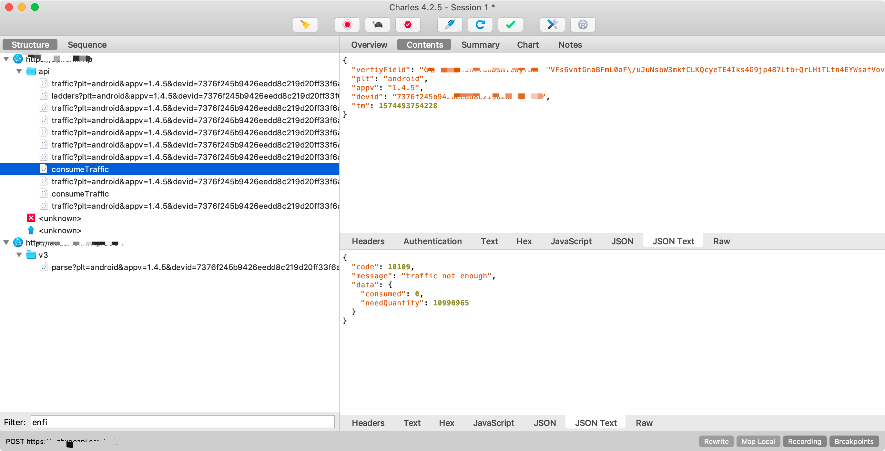
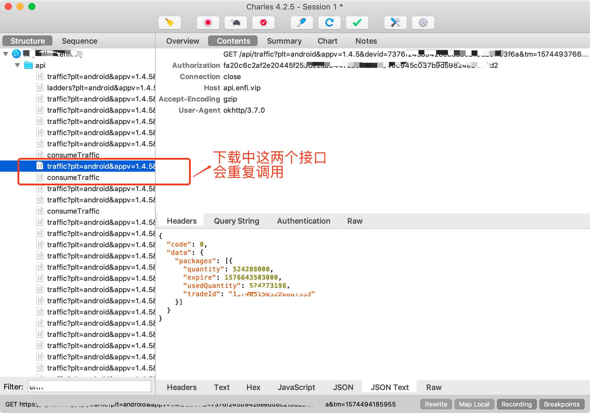
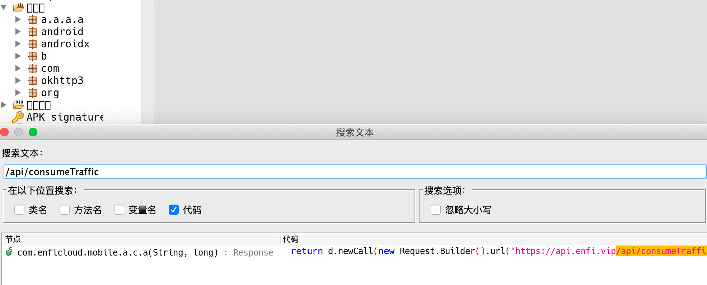
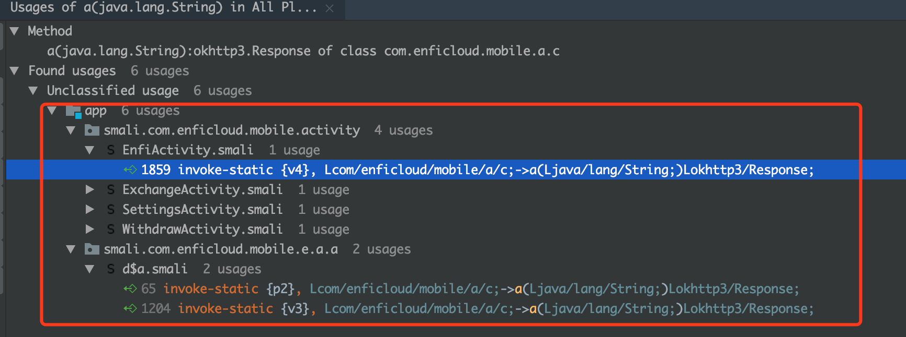

这篇文章已经介绍了破解的原因，本文就重点介绍一下破解的方法。
查看服务端是否做校验
  在动手破解一款app之前最好做一下校验，看下需要破解的功能是否在服务端做了校验，如果是服务端做校验了，那就没必要动手破解了，否则，就是破解成功，最后却发现是白费力气了。
  验证服务端是否做了校验，最好的方法就是抓包，修改接口的返回值，验证是否可以达到自己想要的效果，如果能达到想要的效果，这时就可以动手来破解app了。
抓包
  我用的抓包工具是Charles，关于怎么抓包这里就不说了，有疑问的话，可以通过文末的方式联系我，这里就直接看抓包的结果，如图


从上面的抓包的结果，可以看出这两个接口是与流量有关的，第一张图可以看出应该是判断用户是否还用充足的流量来加速的，我第一章图截得是我流量不足时的返回值，看下接口返回的数据，如下图。

有经验的开发同学都知道，返回值中的code是用来判断状态的，而message是用来显示提示信息的，从这个接口中可以发现提示信息是“流量不足”，code则是“10109”，看下其他接口的返回值，发现code的值是0，于是就把这个接口的code的返回值修改为“0”，看下能否继续加速，结果并没有令人失望，修改后人仍能继续加速。到这里，就能知道破解的点是什么了，只要将代码中获取code的结果改为0即可。
破解
  用jadx-gui工具来查看apk的代码，直接搜索接口名称，结果如下图

直接进入搜索出来的文件，我们需要的代码如下
1
2
3
4
5
6
7
| public static Response a(String str, long j) {
try {
return d.newCall(new Request.Builder().url("https://api.enfi.vip/api/consumeTraffic").addHeader("Authorization", str).post(RequestBody.create(MediaType.parse("application/json; charset=utf-8"), a(str, j, true, SystemClock.currentThreadTimeMillis()))).build()).execute();
} catch (Exception unused) {
return null;
}
}
|
可以发现上面的代码只是接口请求，我们需要的是哪里使用了这个接口的返回值即是哪里调用了这个接口。查看的方法是：利用apktool直接反编译apk,然后将smali代码导入AndroidStudio，找到上面的代码，按下Alt（Option）+F7查看哪里调用了这个方法。搜索到的结果如下

随便进入一个文件，查看相应的代码，这里进入`EnfiActivity`中查看，相关代码如下
1
2
3
4
5
6
7
8
9
10
11
12
13
14
15
16
17
18
19
20
21
22
23
24
25
26
27
28
29
30
31
32
33
34
| invoke-static {v4}, Lcom/enficloud/mobile/a/c;->a(Ljava/lang/String;)Lokhttp3/Response;
move-result-object v0
if-eqz v0, :cond_1
.line 682
invoke-virtual {v0}, Lokhttp3/Response;->isSuccessful()Z
move-result v12
if-eqz v12, :cond_1
.line 686
:try_start_0
invoke-virtual {v0}, Lokhttp3/Response;->body()Lokhttp3/ResponseBody;
move-result-object v0
invoke-virtual {v0}, Lokhttp3/ResponseBody;->string()Ljava/lang/String;
move-result-object v0
.line 688
new-instance v12, Lorg/json/JSONObject;
invoke-direct {v12, v0}, Lorg/json/JSONObject;-><init>(Ljava/lang/String;)V
const-string v0, "code"
.line 689
invoke-virtual {v12, v0}, Lorg/json/JSONObject;->getInt(Ljava/lang/String;)I
move-result v0
|
由于方法太长，只复制了部分重要的代码，重点看下这句代码
1
2
3
4
5
6
| .line 689
const-string v0, "code"
invoke-virtual {v12, v0}, Lorg/json/JSONObject;->getInt(Ljava/lang/String;)I
move-result v0
|
这句代码的含义就是通过JsonObject来获取返回的json中code的值的，我们要修改的就是这个code的值，怎么做呢？我这里采用的是代码注入的方法，直接拿我自己写的代码的返回值。我写的代码如下
1
2
3
4
5
6
7
8
9
10
11
| public class RegisterGetLong {
public static long getLong(String value) {
return 1024000000000l;
}
public static int getInt(String value) {
return 0;
}
}
|
还需要写一份调用的代码，代用的代码如下
1
2
3
4
5
6
| public class Test {
public static void main(String[] args) {
RegisterGetLong.getLong("quantity");
RegisterGetLong.getInt("code");
}
}
|
上面的是Java代码，需要转换成Smali的语法，可以通过AndroidStudio安装Code2Smali插件来转换，由于转换成Smali语法后代码很多，所以这里只看Test类转换后的代码，如下
1
2
3
4
5
6
7
8
9
10
11
12
13
14
15
16
17
18
19
20
21
22
23
24
25
26
27
28
29
30
31
32
33
34
35
| .class public Lsmali/com/enficloud/mobile/activity/Test;
.super Ljava/lang/Object;
.source "Test.java"
.method public constructor <init>()V
.registers 1
.prologue
.line 5
invoke-direct {p0}, Ljava/lang/Object;-><init>()V
return-void
.end method
.method public static main([Ljava/lang/String;)V
.registers 2
.param p0, "args"
.prologue
.line 7
const-string v0, "quantity"
invoke-static {v0}, Lsmali/com/enficloud/mobile/RegisterGetLong;->getLong(Ljava/lang/String;)J
.line 8
const-string v0, "code"
invoke-static {v0}, Lsmali/com/enficloud/mobile/RegisterGetLong;->getInt(Ljava/lang/String;)I
.line 9
return-void
.end method
|
这里只需要这句
1
| invoke-static {v0}, Lsmali/com/enficloud/mobile/RegisterGetLong;->getInt(Ljava/lang/String;)I
|
代码,将上面的通过JsonObject来获取返回的json中code的值的代码换成这句即可，这样获取到的code的值就一直为0了。然后就是回编译，签名，安装及验证了。
  这里只拿修改code的值来举例，当然，还可以修改用户剩余流量的值，文中已有部分代码，修改的原理都一样。最后看下破解的成果
结束语
  本文的目的希望大家通过文中的方法来提升自己的逆向能力，如果实在水平有限，想体验一下破解后的软件，本文开始的一篇文章中有获取的方法。
声明：破解软件只为交流学习使用，不会涉及任何商业用途。如谁用于商业用途，后果自负。
这里有一群志趣相投相投的人，扫码，备注“逆向”，拉你进逆向交流群

本文已由公众号“AndroidShared”首发